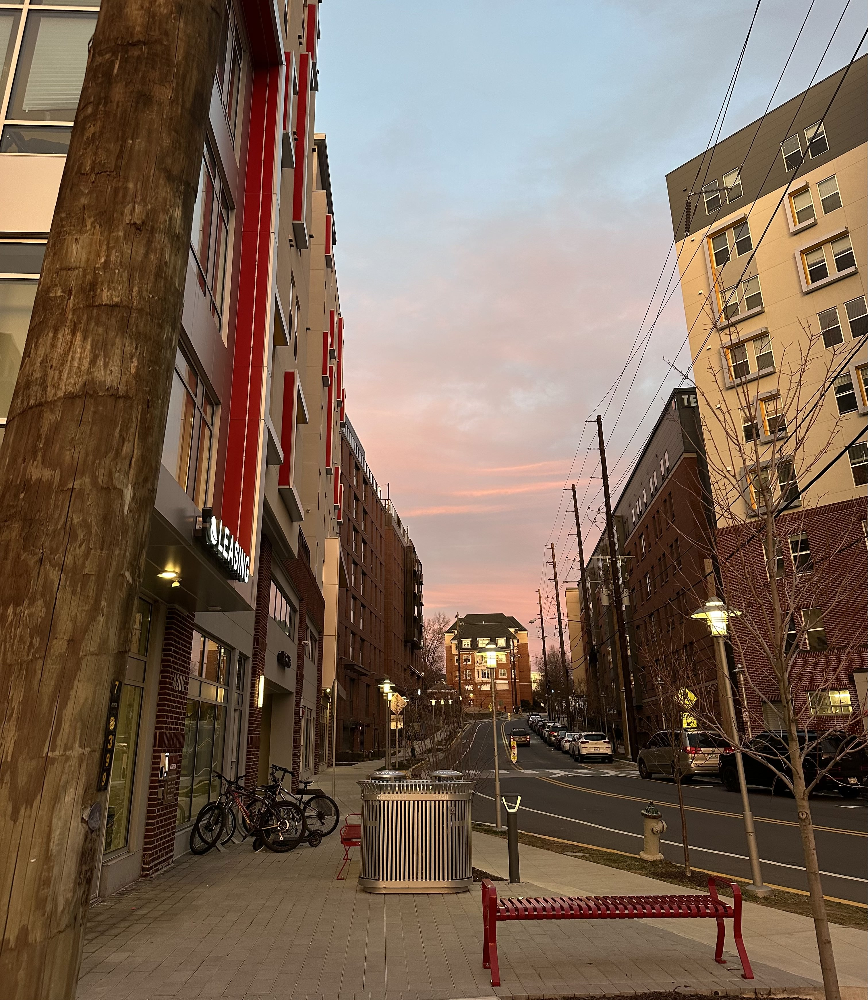

In College Park, the city's skyline tells a story of growth.
Shiny, new apartment towers line Route 1. Student housing complexes advertise rooftop lounges, gyms and private study rooms. Over the past decade, development around the University of Maryland has transformed what was once a quieter college town into a dense, rapidly expanding hub.
But behind that growth is a pressing question for students: can they still afford to live here?
Rental listings from platforms like Zillow and Apartments.com show that the cost of living near campus has increased significantly over the past 10 years. In the mid-2010s, a one-bedroom apartment near campus often rented for roughly $1,200 to $1,400 per month. Today, similar units frequently list closer to $1,900 or more, with newer student-tailored units even reaching $2,000.
Even students with roommates feel the increase. Shared units that once cost a few hundred dollars per person now regularly run between $900 and $1,400 per month per bedroom.
Monthly rents for a four-bedroom apartment
Source: Apartment listing data from Apartments.com (2026).
“I pay way more than I expected,” Elizabeth Walsh, a math major at the University said. “It's basically my biggest expense by far.”
Despite these visible price increases, new research suggests rents may not have skyrocketed as dramatically as they appear.
A recent analysis of student housing patterns along Route 1 found that inflation-adjusted rents in College Park have remained relatively stable over the past decade, even as the area added thousands of new housing units.
Since 2010, more than 7,000 new apartments and roughly 2,000 dorm beds have been built near campus. Much of this growth stems from long-term planning efforts that encouraged high-density development along Route 1 instead of in surrounding neighborhoods.
Housing developments near campus
Student apartment developments cluster along Route 1 near campus.
The strategy appears to have helped in preventing extreme rent spikes, but they remain high relative to what students can actually pay.
The University of Maryland estimates that for the 2025-2026 academic year, off-campus students spend about $10,814 annually on housing, rising to over $11,000 the following year. Total off-campus cost of attendance approaches $36,000 per year for in-state students.
Those numbers translate to roughly $900 per month for housing, well below what many students report paying in reality.
Data from the U.S. Department of Education and university reporting show the average need-based financial aid package is about $17,000.
But tuition and mandatory fees alone consume more than $12,000 of that amount for in-state students, leaving only a few thousand dollars to cover rent, food, transportation and other expenses. For out-of-state students, the challenge is even greater, with total annual costs exceeding $60,000.
“I had to pick between convenience and affordability,” Walsh said.
For many students, housing now takes up a disproportionate share of their budget. Financial experts generally recommend spending no more than 30% of income on rent. But for UMD students, housing often consumes closer to 50% or more.
Between rising rents, limited financial aid and higher overall costs of attendance, off-campus housing is becoming increasingly difficult for the average student to sustain without financial strain.
As development continues and enrollment grows at the University of Maryland, the central question remains: not just whether housing is available, but whether students can actually afford to live here.

Apartment buildings line Knox Road in College Park, Md. Construction on the Aspen Heights apartment
complex was completed in October 2024.
Photo by Isabela Torkamboor